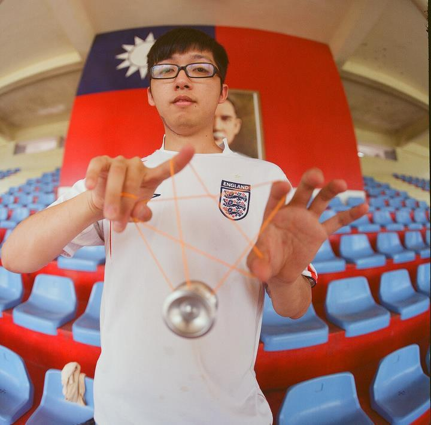

關於我們
Adegleyoyos裕和商店於2008年2月正式在台灣新竹成立，一直以「研發高精度高品質的溜溜球產品、並將溜溜球運動推廣普及至全台灣」為經營理念，竭力促進台灣溜溜球運動社群的發展。
裕和商店不斷收集各方溜溜球選手的使用經驗、檢討市面上各大廠牌溜溜球的優缺點，致力開發出精密、穩定、耐用的原創溜溜球。我們的產品深獲國內外選手的好評，並在國內外各大賽中均取得優異的名次。包括：2009台灣溜溜球大賽5A組第一名、2009台灣溜溜球大賽5A組第二名、2009印尼溜溜球大賽KYI第一名。我們的產品也成功外銷至日本經銷商SpinGear，新加坡經銷商 Spinworkx，為世界各地的溜溜球選手帶來更多更好的選擇。
此外，為了進一步提升國內溜溜球運動的發展，裕和商店於2008年起贊助台灣溜溜球協會TWYF (Taiwan Yo-yo Federation)舉辦每年一度的台灣溜溜球大賽TYYC (Taiwan Yo-yo Contest)，提供選手們切磋花式的舞台，以期提高台灣溜溜球的技術水準，讓台灣的溜溜球可以在世界的舞台上發光發熱。裕和商店並積極投入與地方性溜溜球團體的合作計畫，包括與新竹互動式溜溜球協會HIYA (Hsinchu Interactive Yo-yo Association)的長期合作，贊助器材及人力來維持每週的固定聚會、與全國最大的2A溜溜球聯賽2A GP合作，提供獎品來激發選手們的鬥志和潛力。
若需更進一步瞭解產品訊息，歡迎與裕和商店聯絡